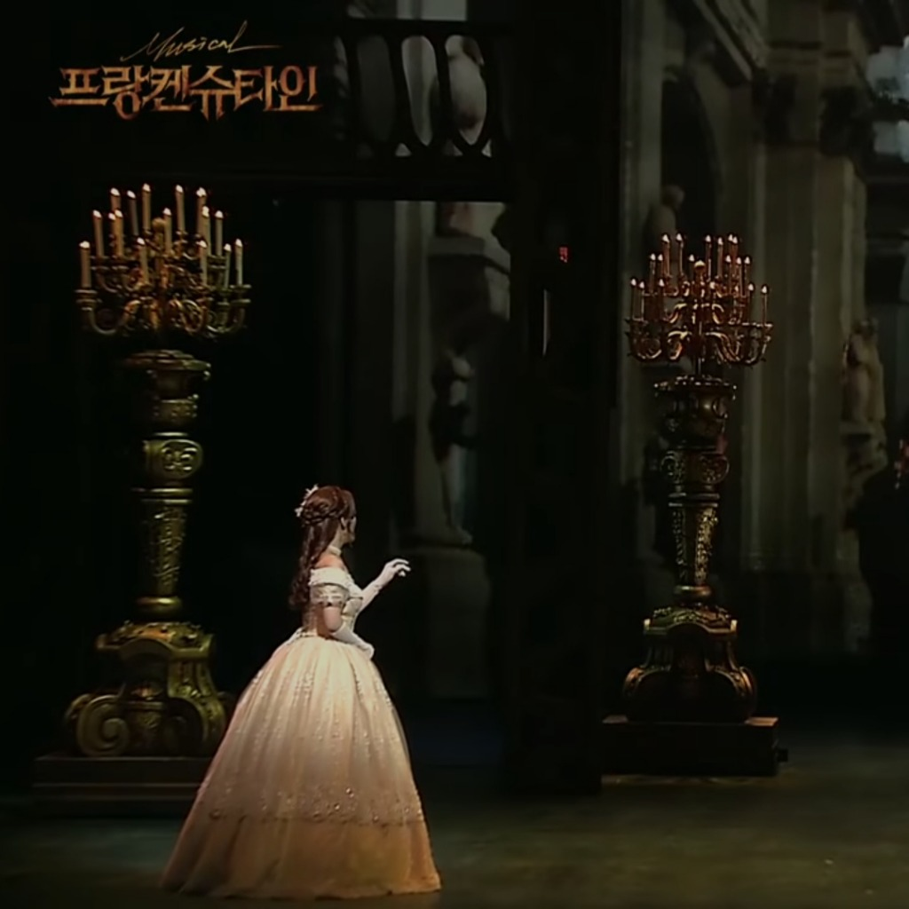

수 많은 밤을 지새며 그대를 기다려왔었네 하지만 내가 본 것은 차디찬 그대 뒷모습 뿐
내게 해주었던 약속 다 잊은 걸까 난 뭘 기대한걸까
햇살도 내겐 차가워 숨이 막혀와 어지러워 앞이 캄캄해 무서워 머리엔 나쁜 생각만이
난 뭘 기대한걸까
생각해보면 나 혼자만의 착각 그대를 만날 생각에 혼자 들떴나봐
누가 그랬지 아직 소녀같다고 그대를 생각하면 아직 두 뺨이 붉어지는 걸
그대 생각에 잠을 설치고 그대 생각에 미소를 띠고 하루를 살 수 있었지
그대 생각에 오늘만 기다리면서 그댈 만나면 하고 싶은 말 참고 또 참았는데
돌아오지 않는 답장에 매일 편지 섰어 그대가 읽을 거라 믿으면서
이제 혼잣말이 되었네 공허한 메아리 그대 뒷모습에 얼어붙은 내 맘이 너무 아파
사람들 모두 바보라 해도 괜찮아 난 널 사랑해